설정 한 줄로 바뀌는 것: 도구를 코드로 불러요
한 개발자가 Claude Code에 설정 한 줄을 넣고 똑같은 작업을 다시 돌렸더니 입력 토큰이 37% 줄었어요. 그 한 줄이 켜는 기능이 Code Mode예요. 2026년 11월 12일 Claude Code에 실험 기능으로 들어왔고, Claude가 도구를 쓰는 방식 자체를 바꿔요.
아래 표가 그 실험이에요. 주문 파일 40개에서 결제 금액이 가장 큰 고객 세 명을 찾게 했어요. 왼쪽 열이 Code Mode를 끈 상태, 오른쪽 열이 켠 상태예요. 초록 줄(첫 요청의 입력 토큰)이 36,404에서 22,233으로, 그 아래 캐시까지 포함한 전체 입력 토큰이 150,364에서 94,659로 줄었어요. 맨 아래 답은 양쪽 모두 initech, umbrella, acme로 같아요.
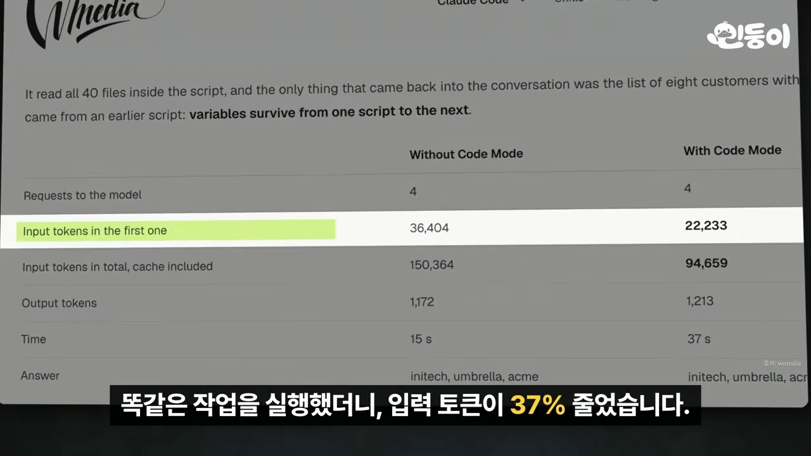
특히 크게 줄어든 건 도구 설명이에요. Claude에게 어떤 도구가 있고 어떻게 쓰는지 알려 주는 몫이죠. /context로 보면 System tools가 24.6k 토큰에서 11.1k 토큰으로 절반 넘게 줄어 있어요.

/context를 치면 같은 숫자를 확인할 수 있어요.
영상 00:10에서 보기
같은 일을 어떻게 다르게 하나요
영상은 주문 파일 40개 예시로 차이를 보여 줘요. 기존 방식에서는 Claude가 도구를 불러 파일 내용을 받고, 결과를 하나씩 확인하면서 다음 일을 정해요. 주문 내역이 전부 Claude에게 넘어오는 거예요.
Code Mode에서는 Claude가 여러 도구를 부르는 JavaScript를 직접 써요. 아래 그림의 세 칸처럼 파일 읽기, 고객별 합산, 상위 3명 추리기가 모두 코드 안에서 이어져요. Claude는 마지막 칸의 결과만 받아요.
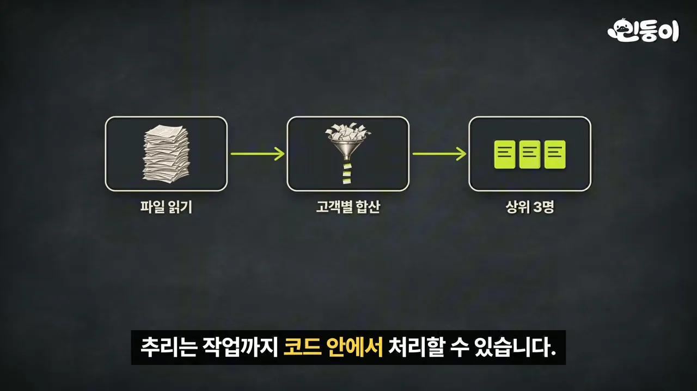
그래서 토큰이 주는 곳은 두 군데예요. 아래 그림 왼쪽의 중간 데이터는 코드 안에서 걸러지고, 오른쪽의 도구 설명은 도구를 코드로 부르게 되면서 훨씬 짧아져요.
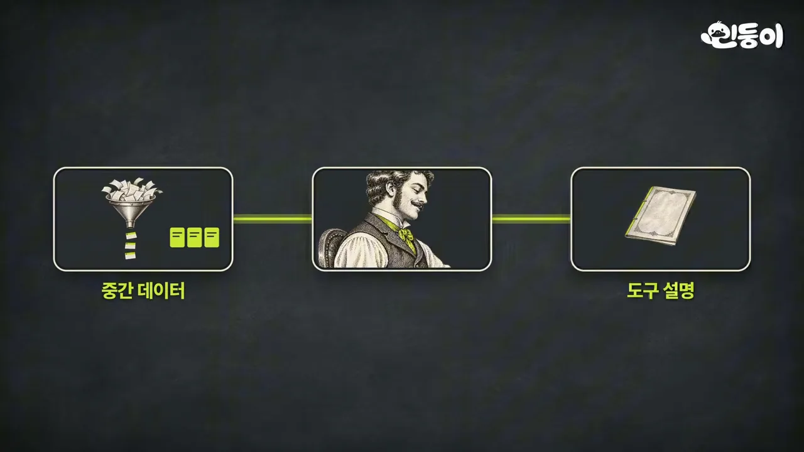
토큰은 줄었는데, 속도는요?
토큰이 줄어든 만큼 빨라졌을까요? 꼭 그렇진 않았어요. 앞의 주문 파일 실험에서 시간 줄을 보면, 끈 상태는 15초, 켠 상태는 37초가 걸렸어요. 토큰은 줄었는데 시간은 두 배 넘게 늘었어요.
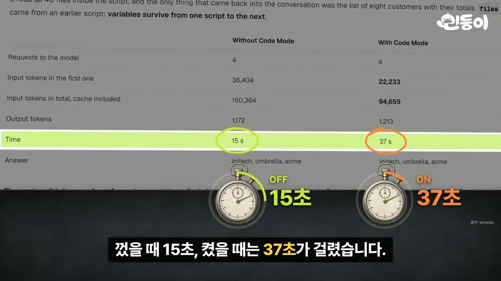
더 크게 벌어진 사례도 있어요. 한 개발자가 문서 파일 432개에서 잘못된 링크를 찾게 했어요. 기존 방식은 명령 세 번으로 40초 만에 끝냈어요. Code Mode는 파일 읽기 도구를 742번이나 불러서 1분 36초가 걸렸어요. 화면 아래 흰 상자의 'made 742 Read calls and took 1 min 36 s for $0.62'가 그 기록이에요.
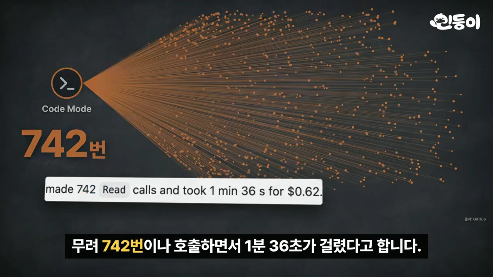
빨라진 사례도 있어요
그렇다고 늘 느려지진 않아요. 개발자 Flavio Copes가 자기 웹 앱 문서에서 잘못된 파일 링크를 찾게 했을 땐 35초에서 15초로 줄었어요. 아래 표의 동그라미가 그 두 값이에요.
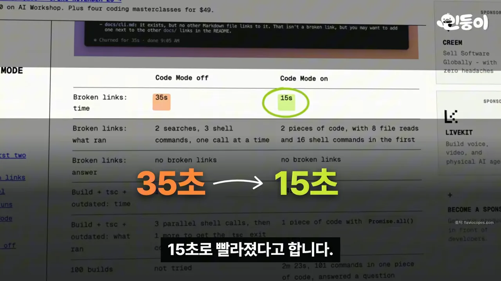
프로그램을 빌드하고 타입 검사를 하는 작업도 17초에서 14초로 조금 줄었어요. 화면 위 줄의 Build + tsc 행이 그 결과예요.
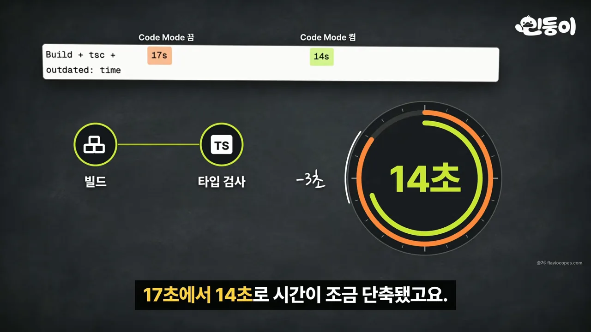
영상에 나온 시간 비교를 한 그림에 모으면 아래와 같아요. 위 두 줄은 켰을 때 느려졌고, 아래 세 줄은 빨라졌어요.
영상은 이 결과를 이렇게 정리해요. 아직 대부분 한두 번 잰 결과라 어느 쪽이 무조건 빠르다고 단정하기 어렵고, 토큰이 줄어도 실제 속도는 Claude가 일을 어떤 방식으로 처리하느냐에 따라 달라져요.
어떤 작업에 켜면 좋을까요?
그럼 어떤 작업에 켜야 효과를 볼까요? 영상은 먼저 Anthropic 공식 문서를 보여 줘요. 화면의 초록 형광펜 세 줄이 문서가 꼽은 작업이에요.
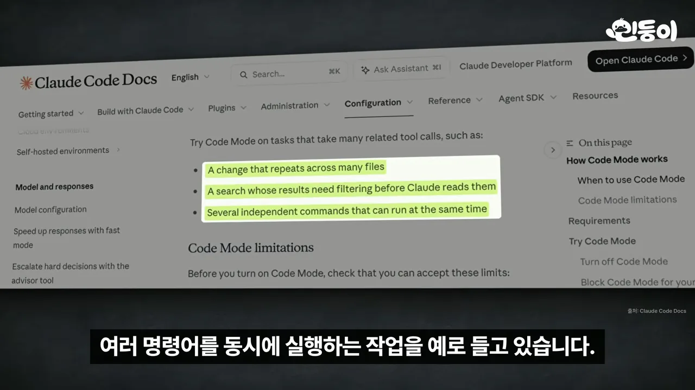
세 줄을 우리말로 옮기면 이래요.
- 여러 파일에 같은 수정을 반복하는 작업
- Claude가 읽기 전에 검색 결과에서 필요한 정보만 추려야 하는 작업
- 서로 독립적인 명령 여러 개를 동시에 실행하는 작업
효과를 본 사례 두 가지
첫 번째는 외부 검색이에요. 한 개발자가 MCP로 연결한 검색 도구로 20번 넘게 검색하고, 중복된 결과를 지운 뒤 믿을 만한 출처 12개만 정리하게 했어요. 화면에 동그라미 친 두 숫자처럼 토큰은 63% 줄고, 작업 시간도 29% 빨라졌어요.
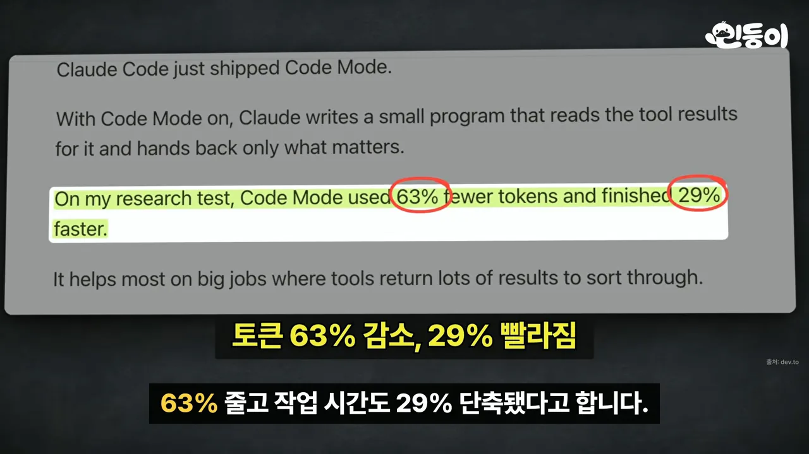
두 번째는 코드를 고치는 작업이에요. 기존 프로그램에 새 옵션을 추가하고 관련 테스트까지 쓰게 한 실험인데, 켜고 끈 상태로 세 번씩 돌렸어요. 화면 왼쪽 위 인용문의 '$0.35 a run instead of $0.45'가 비용, '60 seconds instead of 80'이 시간이에요.
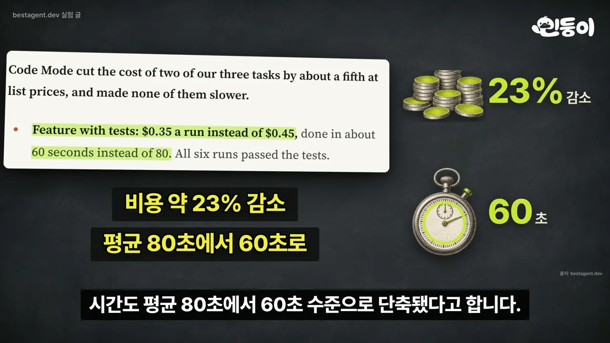
같은 실험에는 반대 결과도 있어요. 파일 20개에 버전 정보를 한 줄씩 추가하는 간단한 작업은 비용과 시간 모두 거의 차이가 없었어요. 화면 목록 맨 아래 '20-file edit: about the same, $0.16 against $0.17'이 그 줄이에요.
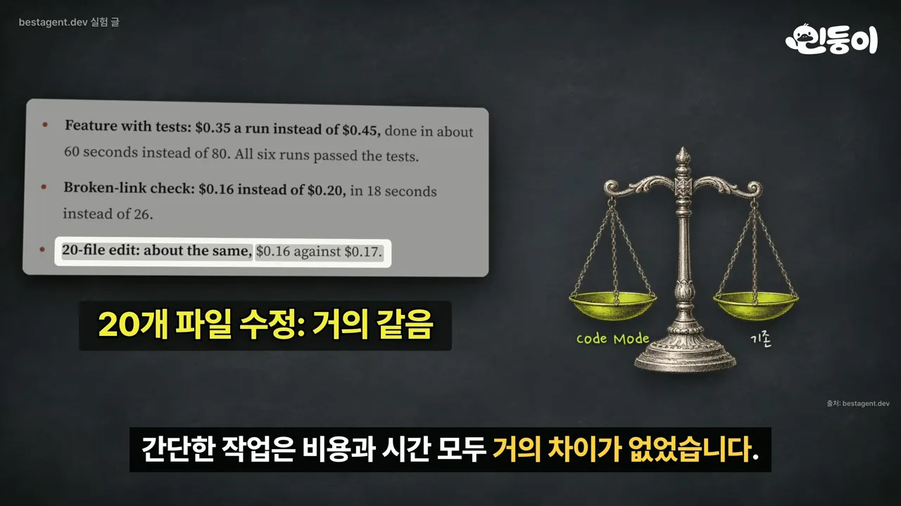
영상의 판단을 표로 묶으면 이래요.
| 작업 | 추천 | 영상 속 근거 |
|---|---|---|
| MCP로 외부 자료를 많이 가져오는 작업 | Code Mode | 검색 20번 이상: 토큰 63%↓, 시간 29%↓ |
| 여러 파일에서 필요한 정보만 추려내는 작업 | Code Mode | 공식 문서의 예시, 링크 점검 35초→15초 |
| 기능 추가와 테스트 작성 | Code Mode | 비용 약 23%↓, 80초→60초 |
| 간단한 파일 수정 | 기존 방식 | 파일 20개 수정: 거의 같음 |
| 빠른 처리가 중요한 작업 | 기존 방식 | 주문 파일 15초→37초, 문서 432개 40초→1분 36초 |
알아 둘 제한과 켜는 방법
Code Mode는 아직 실험 기능이라 켜기 전에 알아 둘 제한이 있어요. 첫째, 터미널에서 실행하는 Claude Code에서만 돼요. 화면의 주황 형광펜처럼 VS Code 패널이나 데스크톱 앱에서는 지원하지 않아요.
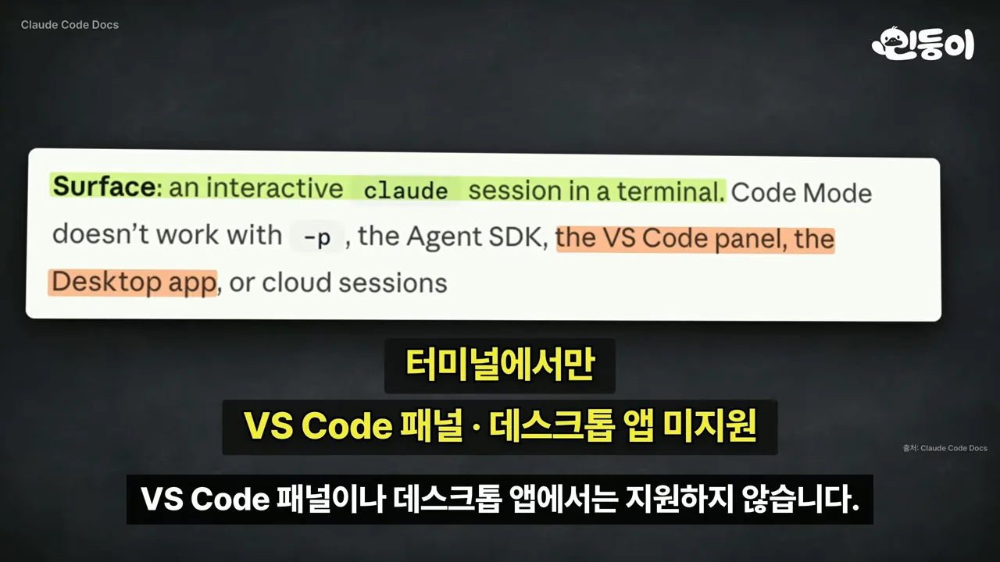
둘째, 실행 시간에 제한이 있어요. 아래 문서의 마지막 항목(Long-running code)처럼, 코드 실행 결과를 기다리는 경우엔 10분이 지나면 멈춰요. 대신 자동 모드나 권한 검사 우회 모드에서 백그라운드로 돌리면 최대 2시간까지 쓸 수 있어요.
셋째, 같은 목록 맨 위의 Resuming 항목이에요. Code Mode로 시작한 대화를 나중에 이어 가려면 다시 Code Mode를 켠 상태로 실행해야 해요.
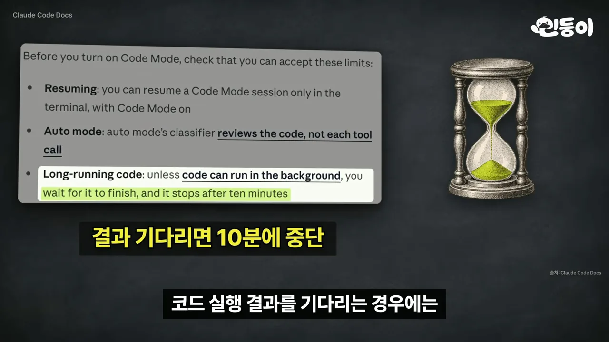
사람마다 자주 하는 작업이 다르니, 영상은 평소 Claude Code에 자주 시키는 작업을 켜고 끈 상태로 각각 돌려 보라고 권해요. 그다음 /cost로 토큰과 작업 시간을 비교하면 나한테 어느 쪽이 유리한지 알 수 있어요.
켜는 방법
터미널에서 아래 한 줄을 실행하면 돼요. 화면에 보이는 그대로예요.
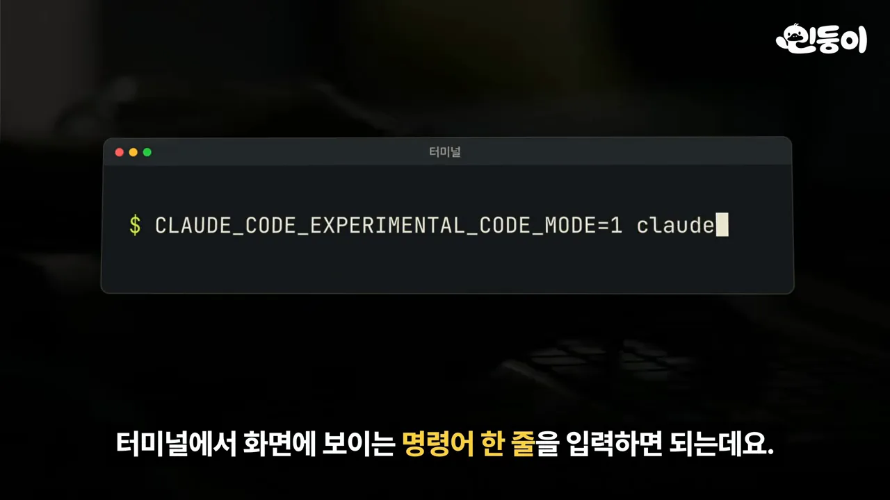
claude를 실행하는 한 줄이에요.
영상 05:27에서 보기
처음 실행하면 켤지 묻는 화면이 떠요. 초록 테두리 안의 Yes, turn on Code Mode를 고르면 돼요.
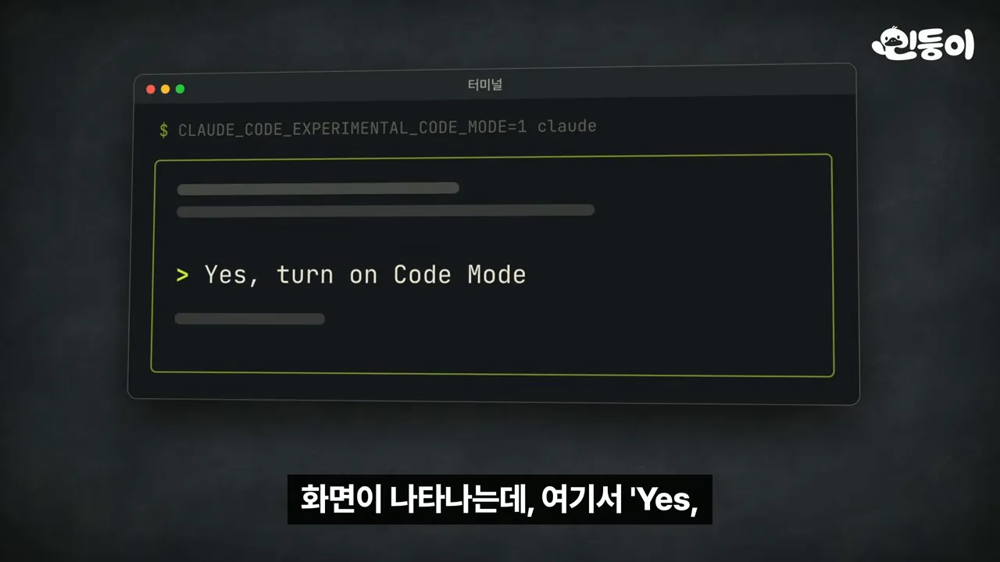
매번 치기 번거롭다면 설정 파일에 넣어 둬요. 아래 문서 캡처의 마지막 줄처럼 ~/.claude/settings.json의 env 블록에 같은 변수를 추가하면, 그다음부터는 claude를 실행할 때마다 자동으로 켜져요.
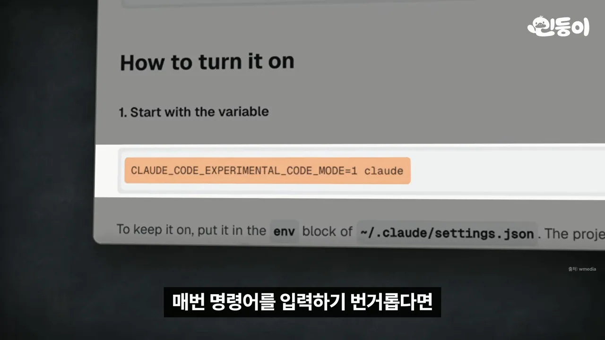
{
"env": {
"CLAUDE_CODE_EXPERIMENTAL_CODE_MODE": "1"
}
}다시 끄고 싶으면 설정값을 "0"으로 바꾸면 돼요. 아래 화면에서 주황 밑줄 친 값이에요.
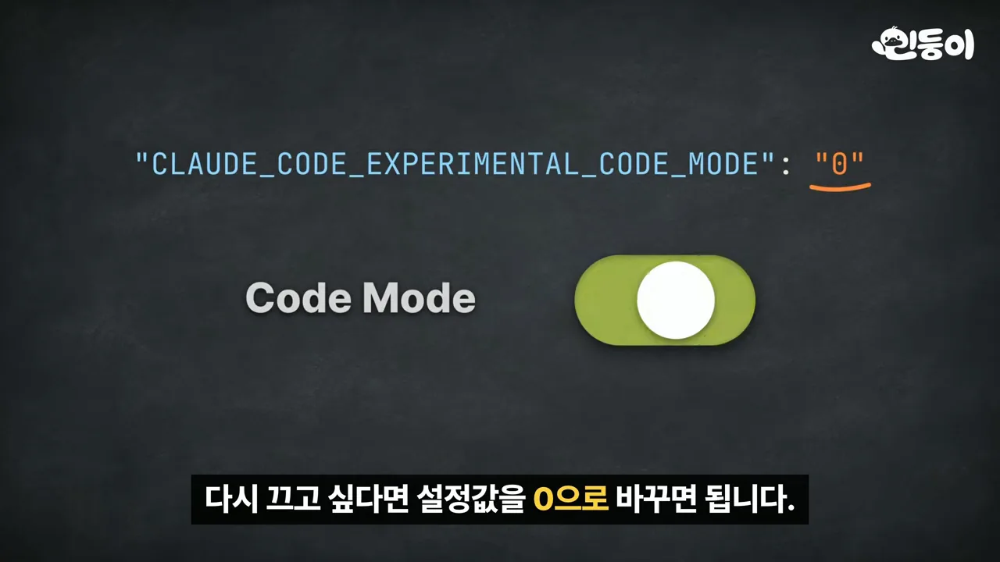
참고로 Code Mode에서 Claude가 쓴 JavaScript는 Ctrl+O를 눌러 볼 수 있어요.
영상의 마무리
영상은 이번 Code Mode에서 토큰 절약보다 방향을 더 눈여겨봐요. Claude가 도구를 하나씩 부르고 결과를 확인하던 방식에서, 여러 작업을 코드로 묶어 처리하는 쪽으로 가고 있다는 거예요. 아직 실험 기능이라 모든 작업이 좋아지길 기대하긴 어렵지만, 터미널에서 여러 파일이나 외부 도구를 자주 다룬다면 직접 켜서 비교해 볼 만해요.